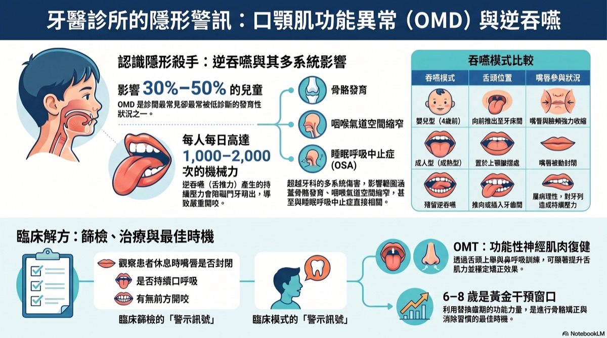
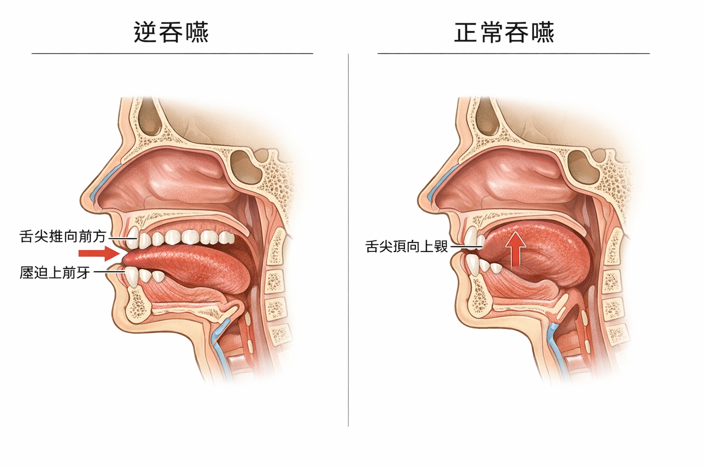
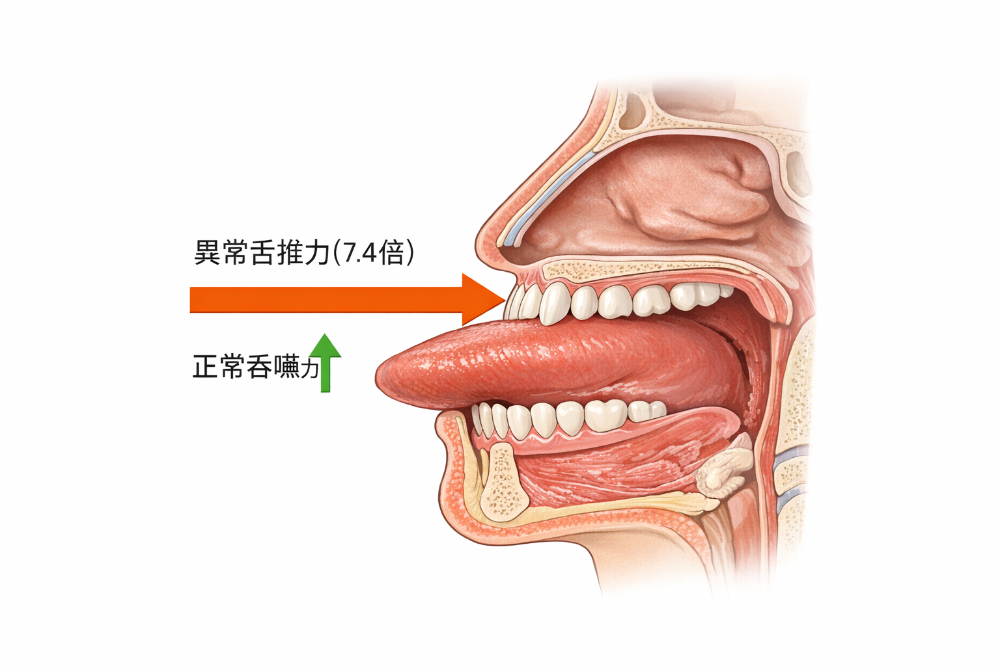

🎬 想像一個場景
你今天吃了三餐、喝了幾杯水、吞了幾口口水——這些加起來，你的舌頭大概移動了 2,000 次。
如果你吞嚥的方式是對的，沒什麼問題。但如果你的舌頭每次吞嚥都往前推，這 2,000 次，就是 2,000 次的「橫向推力」施加在你的門牙上。
一天、兩天感覺不出來。但十年、二十年後呢？
🎙 NotebookLM 學習資源 NEW
AI 生成：音頻導覽 × 投影片 × 資訊圖
本站所有文獻已匯入 NotebookLM，由 AI 自動生成多媒體學習資源，適合不同學習方式的讀者。

▲ NotebookLM 生成資訊圖｜口顎肌功能異常與逆吞嚥
🎧 音頻導覽（中文）
舌頭放錯位置害你磨牙睡不好
逆吞嚥震碎牙齒
補牙一直掉竟是舌頭害的
舌頭竟然推歪臉
共 10+ 份音頻，可在研究文件頁下載
逆吞嚥震碎牙齒
補牙一直掉竟是舌頭害的
舌頭竟然推歪臉
共 10+ 份音頻，可在研究文件頁下載
📊 AI 投影片（英中雙語）
OMD and Tongue Thrust Clinical Protocols
口顎肌功能異常臨床指引
完整 PDF 可至研究文件頁下載
口顎肌功能異常臨床指引
完整 PDF 可至研究文件頁下載
🎥 相關學術簡報
本主題的學術簡報
以下簡報由趙哲暘醫師整理，資料來源為同儕審查學術文獻，歡迎線上觀看或分享。
🎨 AI 視覺圖卡
圖解：你每次吞嚥時發生了什麼？
以下圖卡由 AI 根據學術文獻自動繪製，用視覺化方式呈現逆吞嚥的關鍵概念。
🎯
逆吞嚥視覺說明圖卡
4 張 AI 插圖圖卡 · 正常 vs 逆吞嚥比較 · 中文版
點擊開啟圖卡 →
▲ 點擊開啟 Gamma 互動圖卡 ｜ 資料來源：學術文獻整理，趙哲暘醫師審訂
🖼 醫學解說圖
逆吞嚥：視覺化關鍵說明
以下解說圖由 GPT Image 1.5 依據學術文獻繪製，精準呈現口顎解剖與力學原理。


圖像由 GPT Image 1.5 生成 ｜ 趙哲暘醫師審訂 ｜ 資料來源：同儕審查學術文獻
📖 基本觀念
逆吞嚥是什麼？
簡單說：吞嚥時，舌頭跑到不對的地方。
| ✅ 正常吞嚥（成熟型） | ❌ 逆吞嚥（嬰兒型） |
|---|---|
| 舌尖頂在上門牙後方的硬腭 | 舌頭往前推，頂住或跑出門牙之間 |
| 嘴唇放鬆輕閉 | 嘴唇、臉頰會用力收縮幫忙吞 |
| 牙齒自然輕碰 | 牙齒分開，靠嘴唇力量代償 |
| 力量向上傳遞到上顎 | 力量向前推到門牙（橫向！） |
💡 為什麼會有逆吞嚥？
寶寶出生時天生就用逆吞嚥——這樣才能喝到奶。正常來說，孩子在 6 歲前應該自然過渡到成熟的吞嚥方式。
但如果這個過渡沒有發生（因為口呼吸、舌繫帶、過敏、奶嘴使用太久等原因），嬰兒型吞嚥就會殘留到成年，成為你一輩子的習慣。
📊 數字說話
這有多常見？
30–50%
兒童有口顎肌肉功能問題（包含逆吞嚥）
38%
成年人仍有殘留的非典型吞嚥模式
72%
需要正顎手術的患者同時有口顎肌功能問題
資料來源：系統性回顧與臨床研究匯整（SciSpace CDP v8.3）
💪 生物力學
舌頭推力有多驚人？
這是研究人員實際量測出來的數字，可能會讓你嚇一跳：
🔬 實際研究數據（使用 IOPI 舌壓量測儀）
正常吞嚥的舌頭力量：2.469 kPa
逆吞嚥的舌頭推力：18.39 kPa
差距：整整 7.4 倍，而且方向完全錯誤——是橫向推力，不是向上的力量
📐 這代表什麼？
想像每天有人用 7 倍的力量，橫向推你的前牙，推 2,000 次。
一年就是 730,000 次推力。
難怪牙齒會慢慢移位、矯正完又復發、牙頸部出現磨損的小缺口。
⚠️ 後果
如果不處理，會怎樣？
逆吞嚥不只是「一個壞習慣」，它會引發一連串的骨牌效應：
起點
舌頭每天往前推 2,000 次
力量是正常吞嚥的 7.4 倍，方向卻是橫向的
↓
牙齒
門牙被慢慢往前推
產生牙縫、門牙外暴、咬合不正、矯正後容易復發
↓
顎骨
舌頭低位，失去對上顎的支撐
上顎發育變窄、變高、弓形縮窄，牙齒沒有足夠空間
↓
氣道
上顎窄 + 舌頭低位 = 氣道空間縮小
睡眠時呼吸道容易塌陷，OSA 和打鼾風險大增
↓
睡眠
睡眠品質差、磨牙、早晨頭痛
睡眠呼吸中止症引發夜間磨牙，形成惡性循環
💬 還有這些症狀
- 🦷 牙頸部出現楔形小缺口（NCCLs），修復體一補了又脫落
- 😮 嘴唇容易乾裂，習慣張嘴
- 📐 嘴唇或臉頰吞嚥時會明顯用力縮
- 🗣 說某些字（ㄓ、ㄔ、ㄕ）的發音不清楚
- 😬 矯正完牙縫又開了，或門牙又往前跑
三句話總結
- 逆吞嚥就是「每天 2,000 次，用 7 倍力量，橫向推牙齒」——累積傷害不亞於任何副功能習慣。
- 它不只傷牙齒，還會讓臉型發育偏差、氣道縮小，最終引發睡眠問題和磨牙。
- 這是可以治療的——口顎肌功能治療（OMT）已被研究證實有效，越早處理效果越好。
「你不需要知道所有的學術名詞。
你只需要知道一件事：
如果吞嚥時舌頭往前推，
那你的牙齒每天都在被傷害。」
你只需要知道一件事：
如果吞嚥時舌頭往前推，
那你的牙齒每天都在被傷害。」
── 口顎肌功能研究摘要改寫
🧪 自我測試
你有逆吞嚥嗎？
現在就來試試看！這個測試不能取代專業評估，但可以給你一個初步的參考。
🪞 方法一：對著鏡子吞口水
現在，慢慢吞一口口水，同時觀察：
- 你的嘴唇有沒有閉起來？（應該要閉）
- 你的嘴唇或臉頰有沒有用力收縮？（不應該）
- 你的下巴有沒有往前伸？（不應該）
- 舌頭有沒有從牙縫之間跑出來？（不應該）
🖐 方法二：手指感受法
把食指輕放在嘴唇上，然後吞口水：
- 如果你感覺到嘴唇或下巴在用力推你的手指——這是逆吞嚥的典型徵兆
- 正常吞嚥時，嘴唇只是輕輕閉著，不應該有明顯的肌肉收縮力
📝 10 秒問卷：你符合幾項？
1. 吞嚥時，嘴唇或臉頰會明顯用力
2. 牙齒矯正後，過一段時間又移位或縫隙回來了
3. 嘴唇平時習慣開著，不自覺張嘴呼吸
4. 說話某些發音（ㄓ、ㄔ、ㄕ或舌頭音）感覺不清楚
5. 有前牙開咬（上下門牙咬起來有縫）
❓ 你可能想問
關於逆吞嚥的疑問
逆吞嚥一定要治療嗎？它不會自己好嗎？+
逆吞嚥通常不會自己消失，因為這已經是你根深蒂固的肌肉記憶。就像你寫字的慣用手，不靠刻意練習是很難改變的。研究顯示，如果不治療，逆吞嚥會持續傷害牙齒、持續阻礙顎骨發育，也讓其他治療（例如矯正）的效果大打折扣。
孩子有逆吞嚥，我要帶去看哪個科？+
可以先從兒童牙科或矯正科開始，請醫生評估是否有逆吞嚥、口呼吸或舌頭姿勢問題。如果確認有，通常會轉介口顎肌功能治療師（OMT Therapist）或語言治療師進行訓練。
治療逆吞嚥要做什麼？很痛嗎？+
口顎肌功能治療是「訓練課程」，不是手術。主要是一系列的舌頭、嘴唇、臉頰肌肉練習，還有學習正確的吞嚥動作。不會痛，但需要每天練習，有點像學樂器一樣，需要時間和耐心。一般療程 6–12 個月。
大人也可以治療嗎？還是只適合孩子？+
大人完全可以治療！只是效果在孩子身上更顯著，因為骨骼還在發育，可以被引導。成人治療後能改善吞嚥模式、減少牙齒受力、改善相關的睡眠和咬合問題。最新的 2025 年 RCT 研究也確認成人 OMT 有顯著效果。
📥 學術文件下載
本章學術整理文件
本頁所有數據均來自以下學術整理文件。歡迎下載完整版本，包含論文引用、量化數據與完整研究說明。
💡 常見誤解
這些說法，值得重新認識
以下是一些常見的過度簡化，了解這些有助於你更完整地理解自己的狀況。
逆吞嚥只影響牙齒？
吞嚥方式可能影響的範圍不只是牙齒位置，還包括肌肉使用模式、臉型發育與矯正穩定性，不同個體表現差異很大。
逆吞嚥一定要治療？
是否需要介入，取決於它是否造成實際影響。如果沒有症狀，可以觀察；如果矯正後持續跑掉或合併其他功能問題，值得評估口顎肌功能訓練。
逆吞嚥是稀有問題？
多項研究顯示，某種程度的逆吞嚥在兒童期相當普遍，許多人在發育過程中自然改善，但也有部分持續至成年。
🔗 下一步
繼續探索相關主題
口顎功能問題常有連動。了解相關主題，可以幫你建立更完整的圖像。
🔗 延伸閱讀